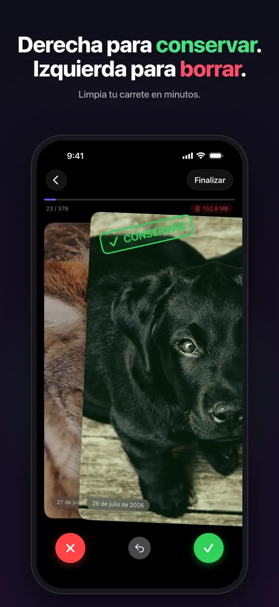
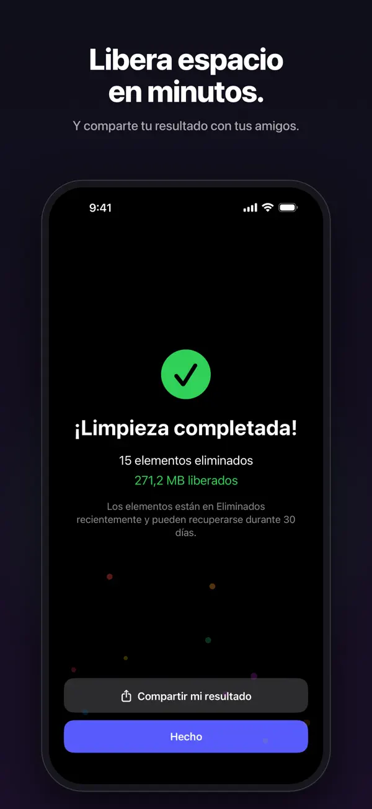

Libera tu iPhone.
Desliza a la izquierda para borrar, a la derecha para conservar.
Swiped limpia fotos y videos en iPhone y iPad. Ordena miles de fotos en minutos, sin anuncios, sin suscripción y sin cuenta. Tus fotos nunca salen de tu teléfono.
- Gratis
- Sin anuncios
- Sin suscripción
- Sin cuenta
- Nada sale de tu iPhone




Cómo funciona
- 1Elige un álbum o todo tu carrete.
- 2Derecha para conservar, izquierda para borrar. Deshaz cuando quieras.
- 3Revisa tu selección, confirma y libera espacio.
Lo esencial, nada más
Privado por diseño
Todo ocurre en tu iPhone. Swiped no recopila datos: «Datos no recopilados» en el App Store.
Borrado seguro
No se borra nada hasta que revises tu selección. Las fotos borradas quedan 30 días en «Eliminado».
Encuentra lo que pesa
Filtra por fotos, videos o capturas de pantalla, por fecha y por tamaño, para encontrar lo que más ocupa.
Contador de espacio
Ve en directo cuántos megas vas a liberar mientras deslizas.
Deshacer sin límite
¿Cambiaste de opinión? Vuelve atrás tantas cartas como quieras.
Sigue después
Tu sesión se guarda en cada deslizamiento. Vuelve mañana y continúa.
Preguntas
¿Swiped es realmente gratis?
Sí. Deslizar, revisar y borrar es gratis, sin anuncios, sin suscripción y sin cuenta. Puede que más adelante haya extras opcionales como compra única, nunca como suscripción.
¿Mis fotos salen de mi iPhone?
No. Swiped mira tus fotos solo en tu iPhone. No tiene servidor y no recopila ningún dato.
¿Qué pasa con las fotos que borro?
No se borra nada sin tu confirmación. Después iOS las pasa a «Eliminado», donde puedes recuperarlas durante 30 días.
¿Funciona con Fotos de iCloud?
Sí. Las fotos guardadas en iCloud también aparecen, y borrar una foto en Swiped la borra en todas partes, como en la app Fotos.
¿Qué dispositivos son compatibles?
iPhone y iPad con iOS 16 o posterior, en 9 idiomas.
¿Hay versión para Android?
No. Swiped es solo para iPhone y iPad. Las apps con un nombre parecido en Android o en otras partes del App Store no tienen relación con ella.
Swiped: Limpiar Fotos
Descargar en el App StoreiPhone · iPad · Gratis